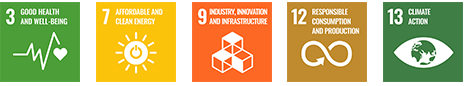
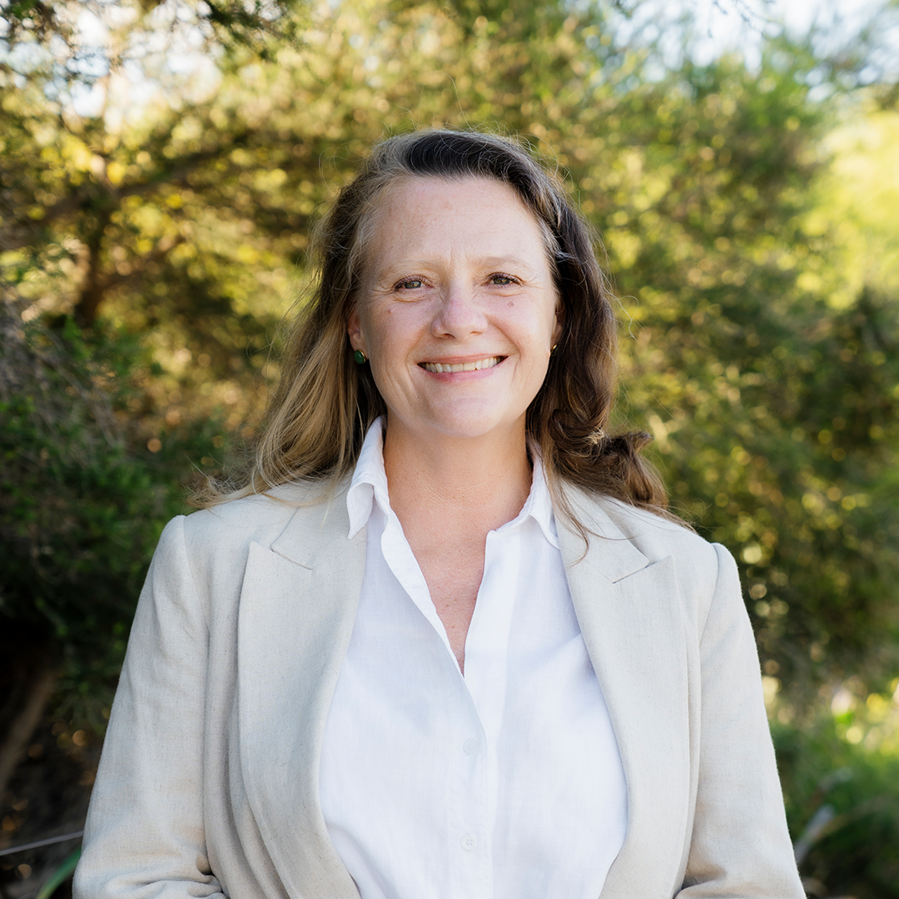

Skip to main content
Team 1 · Data, Insight, Impact
Powering T&L with Waste-to-Energy Systems
A dynamic optimisation and machine learning framework for sustainability education, combining synthetic data, predictive modelling, and optimisation to solve real-world energy and resource challenges.
Waste-to-energy systems
Machine learning
Dynamic optimisation
Curriculum integration

Project Information
The project turns biogas hub design into an applied teaching and learning framework for sustainable systems modelling.
The framework supports decisions about regional biogas hub location, feedstock allocation, feedstock blending, transport logistics, resource use, energy pricing, and emissions reduction under uncertainty.
Institution
Curtin University
School
Electrical Engineering, Computing & Mathematical Sciences
Core Methods
Synthetic data, machine learning, optimisation, scenario analysis
Application Area
Biogas hubs, organic waste, renewable energy, emissions reduction
SDG 3
SDG 7
SDG 9
SDG 12
SDG 13
Framework Focus
Generate realistic data for robust waste-to-energy experimentation.
Predict biogas yield, resource demand, digestate output, and market conditions.
Optimise hub locations, feedstock allocation, blending, transport, and operating inputs.
Explore uncertainty from feedstock supply, energy prices, carbon value, logistics, and performance risk.
Team
Team 1 brings together AI, data science, modelling, optimisation, and digital sustainability capabilities.
Dr Sam Wiwatanapataphee
Project Investigator
Dr Ying Li
Project Investigator

Dr Fabiana Tessele
Project Mentor
Chris Buhlmann
Project Mentor
Completed
Phase 1: Data Collection and Exploration
Industry context review, sustainability challenges, data exploration, and project scoping.
Completed
Phase 2: Data Engineering
Development and release of a synthetic data generation framework, including linked datasets, validation tools, and documentation.
Completed
Phase 3: Machine Learning Framework
Development of predictive models for biogas yield and resource demand, alongside the design of student projects.
Completed
Phase 4: Assignments & Projects Design
Development and implementation of industry-informed assignments and projects using the developed frameworks.
Completed
Phase 5: Optimisation Framework
Development of optimisation models for resource allocation and process efficiency, alongside the design of student projects.
Completed
Phase 6: Evaluation of Curriculum Integration
Evaluation of curriculum integration, student learning outcomes, and opportunities for future improvements.
Poster
The showcase poster summarises the framework, curriculum integration, priority SDGs, and delivery phases.
Open poster PDF in a new tab